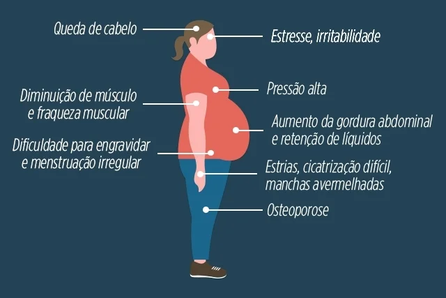

Cortisol
O cortisol, hormônio ligado ao estresse, pode ter seus níveis relacionados ao tamanho do cérebro e à diminuição das funções cognitivas. Isso significa que pessoas mais estressadas tendem a apresentar redução no volume do cérebro e perda de memória.
A vida nas grandes cidades torna a ideia de uma rotina sem nenhum tipo de estresse praticamente impossível. O que os pesquisadores querem agora é mapear as causas e consequências das alterações provocadas pela rotina agitada. “Em nossa busca para entender o envelhecimento cognitivo, um dos fatores que atraem interesse e preocupação significativos é o crescente estresse da vida moderna”, acrescenta Sudha Seshadri, professora no Centro de Ciências da Saúde da Universidade do Texas e co-autora da pesquisa.
A equipe também investigou se os níveis mais altos de cortisol estavam ligados ao APOE4, fator de risco genético que tem sido associado a doenças cardiovasculares e ao mal de Alzheimer, mas não encontraram uma relação direta entre ambos.
Apesar da associação entre aumento dos níveis de cortisol e a perda de memória e diminuição do cérebro, não se pode afirmar que se trata de uma relação de causa. No entanto, a equipe observa que é importante acompanhar o nível de cortisol no organismo e buscar maneiras de estresse, como dormir o suficiente e fazer exercícios moderados.
Oxitocina
A oxitocina é um hormônio produzido pelo hipotálamo e armazenado na hipófise posterior, e tem a função de promover as Contrações musculares uterinas durante o parto e a ejeção do leite durante a amamentação. A oxitocina ficou conhecida também como o hormônio que promove sentimentos de amor, união social e bem-estar.
Conhecido como hormônio do amor, pois costuma ser liberado quando estamos perto de nossos parceiros. Quando isso acontece, os níveis de cortisol (hormônio do estresse) diminuem no organismo. Também está intimamente ligada à sensação de prazer e de bem estar físico e emocional e à sensação de segurança e de fidelidade entre o casal.
Endorfina
A endorfina é um neuro-hormônio, ou seja, trata-se de uma substância natural, produzida pela glândula hipófise, presente no nosso cérebro. Sua principal função é inibir a irritação e o estresse, contribuindo para a sensação de satisfação, bem-estar e de felicidade dos seres humanos.
A endorfina é liberada na circulação diretamente pela hipófise ou projetada para áreas do cérebro através de fibras nervosas. Essa é uma resposta do organismo a estímulos físicos ou emocionais. Ou seja: é possível liberar a endorfina de diversas formas. Essas são algumas delas:
-
Atividade física
Esse é provavelmente um dos jeitos mais lembrados quando falamos de liberação de endorfina, e não é à toa: As atividades aeróbicas regulares de qualquer tipo parecem ser as que mais liberam endorfinas. O indicado é fazer a combinação de dois tipos de exercícios (aeróbio ou anaeróbio) para liberar ainda mais adrenalina e endorfina.
Alguns dados mostram que os níveis liberados através da atividade física variam de acordo com a intensidade do exercício, mas lembre-se: sempre consulte um médico e um profissional de educação física para praticar exercícios da forma correta e sem exageros.
-
Comer chocolates
É isso mesmo: O chocolate estimula a liberação da endorfina, proporcionando aquela sensação gostosa de felicidade. Porém, nem tudo é festa! É importante consumir da maneira correta. Para aproveitar os benefícios que o chocolate proporciona basta comer um quadradinho por dia e o ideal é preferir chocolate com 70% de cacau, evitando grandes quantidades de gordura e açúcar.
-
Relembrar bons momentos
Sabe aquela sensação gostosa de lembrar de uma festa com amigos, ver álbuns de fotografia e ouvir uma música da infância? Pois é: relembrar bons momentos pode ajudar na produção da endorfina.
-
Dar gargalhadas
Parece óbvio e realmente é: dar gargalhadas assistindo alguma coisa, fazendo piadas e relembrando momentos divertidos é gostoso e faz bem para nosso organismo.